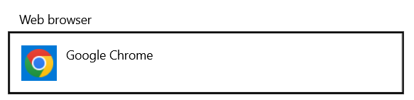
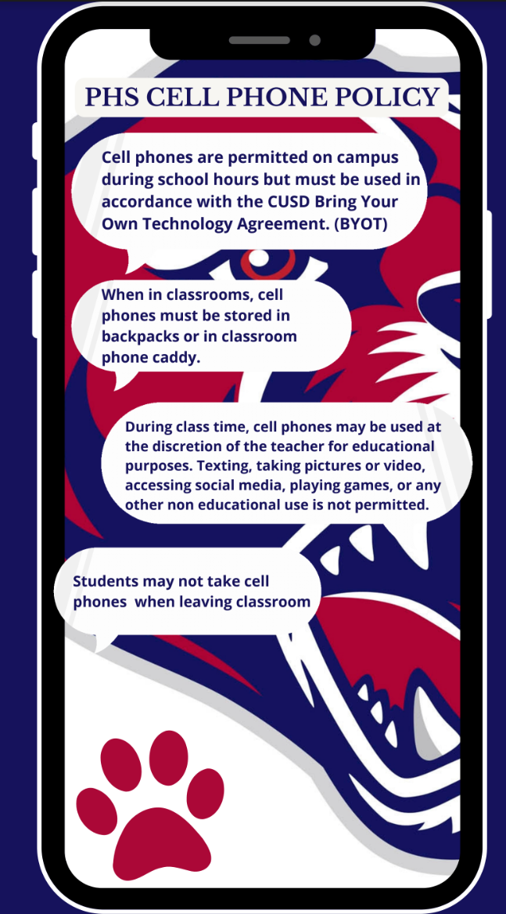
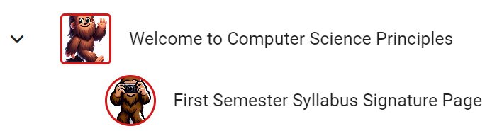

Welcome to Perry High
AP Computer Science Principles
Please come in, find a computer, and log in.
Password Rules
- Minimum length of at least 8 characters
- At least 1 special character
- At least 1 upper case character
- At least 1 numeral
- No character repeated more than twice consecutively
- No 5 consecutive characters carried over from your old password
- At least 1 lower case character
AP Computer Science Principles
Go ahead and open up Google Classroom.
Set Chrome as Your Default Browser
To make sure things run smoothly, we need to make sure Chrome is set as the default browser for your computer.
- 1In the search bar at the bottom of your screen, type default browser

- 2In the menu that appears, select Choose a default web browser

- 3Make sure Google Chrome is your default web browser

Bookmark Your Buzz Course
First, we need to make sure you can access one site we will be using all year.
- 1Click here to go to Buzz
- 2Click the Login button, then sign in with your 'gse' account
- 3Click the star (★) in the URL bar to bookmark this site. You'll need it every day.
Equipment Usage Agreement
Students will receive training for the proper use and care of all equipment. While a student uses school equipment, they are responsible for its care. If school equipment is damaged, lost, stolen, or destroyed under a student's care, that student and their family are responsible for the replacement or repair cost of the damaged equipment.
Student Responsibilities 1 / 2
To succeed in this course and support a positive classroom environment, students are expected to:
- Log in promptly upon arrival. Use your assigned computer and be ready to begin the day's activities.
- Be on time. You must be inside the classroom and preparing for class when the bell rings. Students entering after the bell will be marked tardy.
- Show respect for others' ideas, personal space, and property. Disrespectful comments or actions will not be tolerated.
- Pay attention to whoever has the floor, whether it's the teacher or a fellow student. This includes silencing distractions, including your computer, during discussion or instruction.
- Meet deadlines. Assignments should be submitted on time unless prior arrangements are made.
Student Responsibilities 2 / 2
To succeed in this course and support a positive classroom environment, students are expected to:
- Support the learning environment. Participate actively, stay on task, and help maintain a productive and inclusive atmosphere.
- Take responsibility for absences. If you miss class, review the posted materials and complete any missed work. You are responsible for learning the content covered that day.
- Do your own work. Your grade reflects your own learning, not someone else's and not an AI's. Plagiarism in any form will result in a zero on the assignment.
- Collaboration is valued in this course. You're encouraged to support one another when facing challenges, just be sure to give credit where credit is due, and make sure all submitted work reflects your individual understanding.
Late Work
Late work is generally not acceptable. Assignments are expected to be submitted on time to receive full credit. Most assignments are submitted online; failure to submit on time will impact your score.
- Assignments not submitted by the due date may lose up to 10% per day.
- Assignments more than one week late will not be accepted for a grade.
- Printer issues will not be accepted as an excuse.
Late Work: Absences
If you are absent on the day an assignment is due:
- Unexcused absences may result in a zero for any work due that day.
- For excused absences, you have one week from the date of return to make up missed assignments or schedule any required make-up assessments. It's your responsibility to check what you missed and follow up.
- Class presentations and materials are available online. If you miss class, review the presentation and complete any activities included, then email or ask in class the following day if you have questions.
Grading
Grades for each semester are calculated using points, split across four weighted categories:
Semester Grades
Semester grades are calculated 80/20: the two quarters together account for 80% of the semester grade, and the final exam accounts for the remaining 20%.
PHS Cell Phone Policy
- Cell phones are permitted on campus during school hours, but must be used according to the CUSD Bring Your Own Technology Agreement (BYOT).
- In classrooms, cell phones must be stored in backpacks or in the classroom phone caddy.
- During class time, phones may be used at the discretion of the teacher for educational purposes. Texting, taking pictures or video, social media, games, or other non-educational use is not permitted.
- Students may not take cell phones when leaving the classroom.

Turn In Your Signature Page
Have your parents sign the signature page, then we'll turn it in on Buzz on Friday.

Everyone Brings Something to the Table
One thing that makes this class unique is that you have to invent solutions to problems and create things all the time, both alone and with others. Everyone has a unique and creative perspective to bring to the table. Let's start by seeing how creative we can be right now!
FRQAs we get started, think to yourself: what is something you know a lot about? Something you could teach somebody?
Let's Move to the Tables!
Take your chair to one of the tables. Form groups of 4.
In Your Group
- Introduce yourselves.
- Explain the thing you know a lot about.
- Tell the group something interesting about that topic.
As people introduce themselves, keep track of the topics on your activity guide.
Now, Go Around the Group Again
For each individual's topic:
- Identify some way that technology is used with, or affects, that thing.
- Make a suggestion for either a way technology might be improved to make it better, faster, or easier to use, or a creative new technology that might help solve a problem in that area.
Everyone in the group should make suggestions for any of the areas of interest in your group.
As a Group
- Nominate the idea you've discussed that you think would be most interesting to everyone else in the class.
- Start to sketch out that idea on the back of your activity guide. Make a visual representation of your ideas.
- Remember, this is a rapid prototype: just something to quickly convey the idea!
Once you have an idea, draw it on the poster.
Computer Science Is Changing Everything
This slide plays a synchronized video when hosted through SyncDeck.
What Are You Excited to Learn About This Year?
Share your thoughts on the board. We'll take a look together once everyone has posted.
Code.org
At the top of the Buzz course is a link to code.org, another site we'll be using that hosts many of our activities.
- 1Open the link to code.org.
- 2Click the Continue with Google button to log in with your 'gse' account.
We're Almost Done
We've completed the first lesson from code.org. There's just one more step you need to take.
Go to code.org and open Lesson 1. At the top of the page is the navigation bar for the lesson. Each lesson is broken into parts, represented by "dots." This lesson only has one dot. Read the quotes and answer the question.